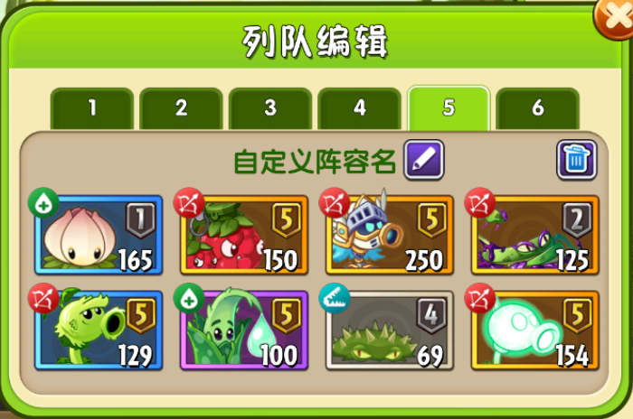
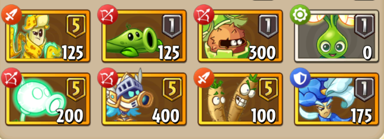
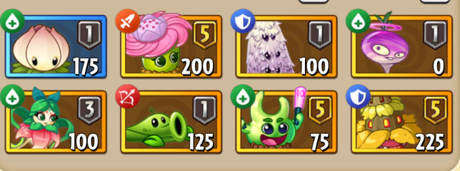
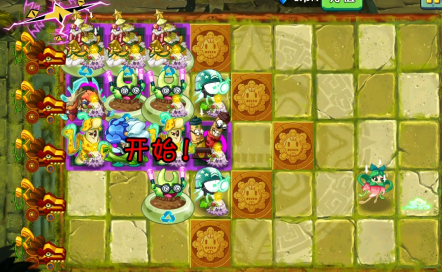
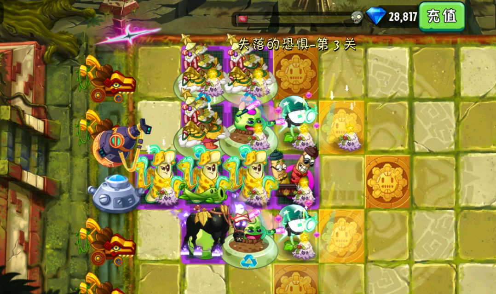
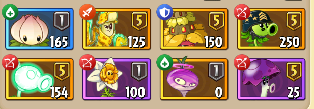

无尽通用框架 — 可视化编辑界面
通过拖拽和点击即可完成无尽配置，无需手动编写 JSON。
👉 https://daoyanxiaoz.github.io/Endless_Visualization_Configuration/
专为无尽模式挂机设计，自动完成抛花、Boss关喂豆、补种植物等关键操作。
9-1、9-2。(5-3)。
仅适用于简单无尽，需在选卡界面启动。




香蕉和瓷砖一定不要带任何装扮！ 否则脚本无法识别运行条件。

通用框架是 MaaPvz 无尽模式的核心辅助系统，分为前期布阵（custom）和后期布阵（fw）两大模块，分别对应布阵阶段和挂机阶段的配置。下面按模块逐一说明。
前期布阵用于在无尽前期（通常为1~4关）自动布置阵型，包含卡槽种植、守卫菇、铲子、喂豆等操作。所有配置均对应 JSON 中 option 下以 frame_wj_custom_ 开头的选项。
前期布阵在 自定义布阵 开关开启时生效，通常配合 frame_wj_custom_回到后期 设置转换关卡。
为每个卡槽（1~8）设置种植位置，每个卡槽最多可配置 10 个 种植点位。
卡1种植 ~ 卡8种植列-行（如 5-3）使用建议：按卡槽顺序依次布置，建议先布核心输出植物，再布辅助植物。坐标从 1-1（左上角）到 9-5（右下角）。
在指定位置种植守卫菇，给周围植物二次开大，最多可设置 5 个 种植位置。
frame_wj_custom_是否种守卫菇frame_wj_custom_种守卫菇位置1 ~ 位置5守卫菇种植后会自动喂豆并铲除（取决于铲子配置），实现“种→喂→铲”的循环操作，让周围植物获得二次开大的机会。
分为 守卫菇前铲子 和 守卫菇后铲子 两组，每组最多 5 个铲除位置。
frame_wj_custom_是否使用铲子1frame_wj_custom_使用铲子1 ~ 铲子5frame_wj_custom_是否使用铲子2frame_wj_custom_使用铲子6 ~ 铲子10前期布阵中的喂豆配置，与后期布阵的喂豆相互独立，仅在前期阶段生效。
frame_wj_custom_布完阵是否喂豆frame_wj_custom_喂豆位置 + 坐标frame_wj_custom_boss关是否喂豆frame_wj_boss_custom_喂豆位置 + 坐标frame_wj_boss_custom_喂豆间隔（1~10 秒）后期布阵用于阵型成型后的挂机阶段，包含补植物、铲除、喂豆、抛花、魔甘收尾等核心功能。对应 JSON 中 option 下以 fw_ 开头的选项及部分通用开关。
每关结算后自动补种上一关损失的植物，保障阵型完整性。
是否需要补植物卡槽2_补植物 ~ 卡槽8_补植物补植物只针对卡槽2~8，因为卡槽1通常为能量花等辅助植物，不需要补种。
在补植物完成后，对指定位置执行铲除操作，用于调整阵型或清理多余植物。
铲除植物铲除植物1 ~ 铲除植物5后期挂机阶段的喂豆配置，与前期布阵的喂豆独立。
小关是否喂豆小关喂豆位置 + 坐标小关喂豆间隔（4~100 秒）fw_boss关是否需要喂豆fw_boss关喂豆位置 + 坐标fw_boss关喂豆间隔（默认 4 秒）在关卡开局时立即对指定位置使用能量豆，用于快速启动输出。
是否开局喂豆球果（依赖 小关是否喂豆）喂豆球果 + 坐标喂豆球果仅在 小关是否喂豆 开启时生效，且需要在小关喂豆位置已经布置后使用。
在指定位置抛种能量花，收集能量豆供喂豆使用。需先开启 是否抛花 总开关。
是否抛花小关是否抛花1花位置、2花位置（各 1 个）boss关是否抛花boss关_1花位置 ~ _4花位置Boss关可抛 4 朵花，小关可抛 2 朵，充分利用能量花产出。
开启后大部分其他功能会失效，请慎重开启。
使用魔音甜菜 + 飓风甘蓝（+甜薯）在关卡末尾将僵尸吹飞，实现快速清场。
基础配置
是否魔甘收尾(牢玩家专属)多少秒后种魔甘（默认 15 秒）使用三叶草（卡槽7，种在 9-5）默认站位（未开启识别时）
9-37-2、7-48-2、8-49-5（若开启）高级选项
识别魔甘卡槽位置：允许魔音/甘蓝/甜薯放在任意卡槽（需开启识别）。魔甘前使用能量豆：可指定喂豆位置增强魔甘效果。魔甘失败后是否重开：若失败自动重开（有气流水仙花可关闭）。甜薯1/2种植位置、飓风甘蓝1/2种植位置：自定义种植坐标。以下开关在前期和后期布阵中均可使用，控制脚本的整体行为。
| 开关 | JSON 字段 | 说明 |
|---|---|---|
| 小关加速 | 小关是否加速 | 进入普通关后自动点击加速键 |
| Boss加速 | fw_boss关是否加速 | 进入Boss关后自动点击加速键 |
| 补给智能选取 | fw_boss_补给智能选取 | 自动按优先级选取补给（神器→全部植物→橙色→蓝色→紫色） |
| 相机神器 | fw_boss_是否开相机神器 | Boss关自动使用相机神器复原植物 |
| 识别能量花 | 识别能量花卡槽位置 | 能量花可放在任意卡槽（需与 是否抛花 配合） |
| 识别魔甘 | 识别魔甘卡槽位置 | 魔甘植物可放在任意卡槽（需与魔甘开关配合） |
| 识别三叶草 | 识别三叶草卡槽位置 | 三叶草可放在任意卡槽（需与魔甘开关配合） |
| 刷掉僵尸 | 刷掉僵尸 | 测试性质，暂不建议开启 |
打完一局后自动花钻石刷新重新打，实现真正的全自动挂机。
无尽全自动循环该功能需要消耗钻石，请确保钻石充足。适用于所有预设模式和通用框架。
通过拖拽和点击即可完成无尽配置，无需手动编写 JSON。
👉 https://daoyanxiaoz.github.io/Endless_Visualization_Configuration/
工具功能概览：
建议先通过可视化工具完成配置预览，确认无误后再导出 JSON 文件使用。工具支持 导出 JSON 和 复制预览 功能，方便快速部署。